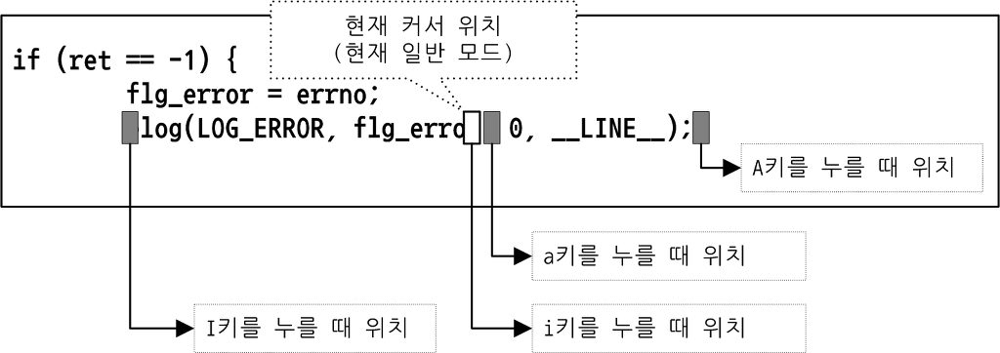
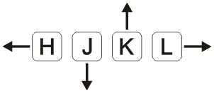
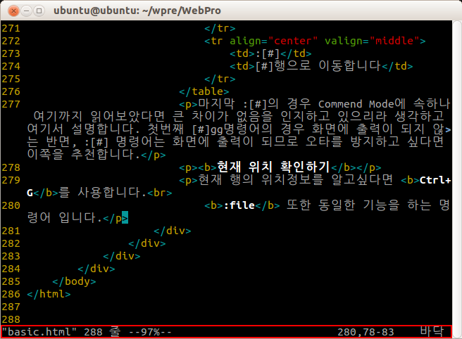

vim에서 텍스트를 편집하기 위해서는 입력모드로 전환해야 합니다. 이에 사용하는 키의 종류가 여러가지가 존재하는데 아래의 표로 그 차이점을 정리해 보았습니다.
명령어 |
기능 |
a |
(append)현재 커서가 위치한 곳에서 한칸 뒤로 이동 후 입력모드로 전환됩니다. |
A |
현재 행의 끝으로 이동한 후 입력모드로 전환됩니다. |
i |
(insert)현재 커서가 존재하는 위치에서 입력모드로 전환됩니다. |
I |
현재 행의 맨 앞으로 이동한 후 입력모드로 전환됩니다. |
o |
(openline)현재 행 아래에 새 행을 만들고 입력모드로 전환됩니다. |
O |
현재 행 위에 새 행을 만들고 입력모드로 전환됩니다. |
R |
(replace)모드로 글자 위에 덧 쓰이는 방식으로 입력모드가 실행됩니다. |
s |
현재 커서가 있는 위치의 단어를 지우고 입력모드로 전환됩니다. |
S |
현재 커서가 있는 행을 지우고 입력모드로 전환됩니다. |
아래 이미지는 a,A 와 i,I의 커서에 위치를 보여줍니다.
|  |
|
이미지 출처:손에 잡히는 Vim
|
기본적으로 vim을 실행하고 이 문서를 편집하기 위한 방법까지는 이전 페이지들에서 설명하였습니다.
이번 페이지에서 설명할 내용은 Command Mode에서 사용하는 기본적인 명령어들로 저장, 다른이름으로 저장, 종료 등의 명령어들을 알아보겠습니다.
| 명령어 | 기능 |
| :w | (write) 현재 파일을 저장합니다. |
| :q | (quit) vim을 종료합니다. |
| :e [filename] | (edit) filename을 엽니다. |
| :w [filename] | filename으로 현재 파일을 저장합니다(다른이름으로 저장) |
| :wq | w 명령어와 q 명령어의 혼합으로 해당파일을 저장하고 종료합니다. |
| :w! [filename] | 해당 파일을 filename에 강제적으로 덮어씁니다. |
| :q! | 변경된 내용을 저장하지 않은채로 vim을 종료합니다. |
| :wq! [filename] | 변경된 내용을 filename에 덮어쓰고 저장합니다. |
위 테이블에서 볼 수 있듯 ! 명령어는 강제명령을 뜻하는 명령어로 이를 문장 마지막에 붙임으로 활용합니다.
filename의 예시를 들자면
:e input.txt - input.txt라는 파일을 엽니다.
:w output.txt - 현재 작성한 텍스트를 output.txt라는 파일로 저장합니다.
이 페이지에서는 Normal Mode에서 사용하는 기본적인 Command들 중 커서와 페이지의 이동에 대해 알아보겠습니다.
커서 상하좌우 이동
Vim이 나올 당시의 키보드는 지금과 같이 텐 키(키보드 우측 숫자판)부분이 없는 형태가 많았습니다.
이로 인해서 당시 커서를 이동할 때에 사용할 다른 기능을 제공하였습니다. 현재에는 화살표 키가 존재하므로 굳이 배울 필요성을 느끼지 못하는 경우가 있지만 손의 이동을 최소화하며 매크로 기능을 작성할 때 커서이동 영문키를 사용하므로 알아두는 쪽이 유리합니다.
또한 상하좌우 키 이동은 대소문자를 구분하므로 이에 유의해야 합니다.
|  |
| 이미지 출처:ece.uwaterloo.ca |
| 명령어 | 기능 |
| [#]h | h 단일 키로는 좌측 1칸 이동, [#]에 수치를 적을 경우 그 수치만큼 좌측으로 이동 |
| [#]j | j 단일 키로는 아래로 1칸 이동, [#]에 수치를 적을 경우 그 수치만큼 아래로 이동 |
| [#]k | k 단일 키로는 위로 1칸 이동, [#]에 수치를 적을 경우 그 수치만큼 위로 이동 |
| [#]l | l 단일 키로는 우측 1칸 이동, [#]에 수치를 적을 경우 그 수치만큼 우측으로 이동 |
| ^ | 행의 맨 앞으로 이동합니다(단, 공백을 무시하므로 Home key와는 차이가 있습니다) |
| $ | 행의 맨 마지막으로 이동합니다(= End key) |
화면 스크롤
위의 커서이동 명령어로는 화면단위의 이동이 불편하므로 이에 따라 화면 스크롤을 하기 위한 단축키들 중 가장 많이 쓰이는 4가지에 대해 알아보겠습니다.(이는 대소문자를 구분하지 않습니다)
| 명령어 | 기능 |
| Ctrl+B | 위로 한 화면 스크롤(=Page Up key) |
| Ctrl+F | 아래로 한 화면 스크롤(=Page Down key) |
| Ctrl+U | 위로 1/2 화면 스크롤 |
| Ctrl+D | 아래로 1/2화면 스크롤 |
문서 특정위치로 이동하기
만일 문서가 1만행이라고 가정할 경우 위의 스크롤 만으로도 이는 매우 불편합니다. 때문에 문서의 특정한 행으로 이동하는 명령어가 따로 존재합니다.
| 명령어 | 기능 |
| [#]gg | [#]에 적힌 수치의 행으로 이동합니다. 만일 수치가 없을 경우 이는 1행으로 이동합니다. |
| [#]G | [#]에 적힌 수치의 행으로 이동합니다. 만일 수치가 없을 경우 이는 마지막 행으로 이동합니다. |
| :[#] | [#]행으로 이동합니다 |
첫번째 [#]gg명령어의 경우 화면에 출력이 되지 않는 반면, :[#] 명령어는 화면에 출력이 되므로 오타를 방지하고 싶다면 이쪽을 추천합니다.
현재 위치 확인하기
현재 행의 위치정보를 알고싶다면 Ctrl+G를 사용합니다.
:file 또한 동일한 기능을 하는 명령어 입니다.
|  |
| 붉은색 태두리 내부에 현재 위치에 대한 정보가 출력됩니다. |
"basic.html" 문서를 편집하고 있으며, 이는 288라인으로 이루어져 있습니다. 현재 커서는 문서의 97%위치에 있으며 280행,78-83열을 가리키고 있습니다. 현재 보고있는 페이지는 바닥(100%)페이지 입니다. |
삭제하기
insert mode에서의 삭제는 일반적인 입력과 동일하게 backspace 또는 delete로 실행됩니다.
normal mode에서의 삭제는 커서의 위치로 특정한 command를 입력받고 이를 실행합니다.
| 명령어 | 기능 |
| x | 커서에 위치한 문제를 삭제합니다(=Delete key) |
| [#]dd | 커서가 위치한 행부터 [#]의 수치만큼의 행을 삭제합니다. 수치가 없을 경우 1행만을 삭제합니다. |
| :[#]d | [#]에 입력한 행을 삭제합니다. |
| D d$ |
현재 커서의 위치에서 현재 행의 끝부분까지 삭제합니다 |
| J | 커서의 위치와 관계없이 아래 행을 현재 행의 끝 부분에 붙입니다(아래 행 전반부 공백은 무시합니다) |
normal mode에서의 삭제는 insert mode에서의 삭제와 차이점이 존재하는데, 행의 끝 부분에 도달할 시 다음 행의 문자를 삭제하는 것이 아닌 현재 행에서 전반부 쪽으로 삭제를 진행해 나갑니다.
이는 삭제키가 개행문자(새로운 행을 만드는 문자)를 인식하지 못하기 때문에 발생하는 일 입니다.
붙여넣기
들어가기 전 vim의 특징에 대해 하나 말씀드리자면, vim에서의 삭제 명령어는 모두 잘라내기 명령어로 작동합니다.
만일 어떠한 문장을 복사한 다음 다른 문장을 삭제하고 붙여넣기를 하게 된다면 삭제한 문장이 그 부분에 생성될 것입니다.
이런식으로 삭제된 문자열은 레지스터(register)에 저장되는데 이는 practical page에서 다루도록 하겠습니다.
| 명령어 | 기능 |
| [#]p | (put) [#]의 숫자만큼 반복하여 현재 행에 붙여 넣습니다. 개행문자가 포함될 경우 행의 아래에 붙여넣으며, 수치가 없을 경우 1회만 작동합니다. |
| :[#]pu | [#]에 입력한 행에 복사된 내용을 붙여넣습니다. 수치가 없을 경우 현재 커서의 위치가 있는 행에 붙여넣습니다. |
| P | 현재 행 위에 붙여넣습니다. |
복사하기
| 명령어 | 기능 |
| [#]yy [#]Y |
커서의 위치로 부터[#]만큼 행을 복사(레지스터에 저장)합니다. 수치가 없을 경우 현재 커서가 위치한 행만을 복사합니다. |
| :[#]y | [#]행을 복사합니다. 수치가 없을 경우 현재 커서가 위치한 부분의 행을 복사합니다. |
실행 취소와 재실행
문서를 편집하다 보면 이전에 실행한 명령을 취소하거나 그 명령을 다시 실행하는 경우가 발생합니다.이러한 기능을 undo와 redo라 부르는데 이에 대한 명령은 다음과 같습니다.
| 명령어 | 기능 |
| u | (undo)이전 실행한 명령을 취소합니다. |
| Ctrl+r | (redo)이전 취소한 명령을 다시 실행합니다. |
| . | insert mode에서 ESC를 누르기 전 까지 한 내용을 커서가 위치한 부분에서 반복합니다. |
위 페이지 '삭제,복사 및 취소'를 보았을 때, [#]으로 수치를 정해주는 부분을 볼 수 있었을 것입니다.
이 페이지에서는 이러한 범위지정의 예시와 드래그 기능을 제공하는 비쥬얼 모드(Visual Mode)에 대해서 소개합니다.
Command mode 범위지정
| 명령어 | 기능 |
| [#1],[#2]d | [#1]부터 [#2]번째 행까지 삭제합니다. |
| :%y | 문서 전체를 복사합니다. |
범위를 지정하는 기본적인 틀은 위와 같으며 이에 대한 예시 몇가지를 아래에 소개합니다.
:2d - 2번째 행을 삭제
:3y - 3번째 행을 복사
:4pu - 4번째 행에 레지스터 내용을 붙여넣기
:5,20d - 5~20 번째 행을 삭제
:6,$d - 6~마지막 행을 삭제
:1,$y - 1~마지막 행을 복사(=:%y)
:.,+20y - 커서가 있는 행부터 아래로 20행을 복사
:-10,+5y - 커서가 있는 행으로 부터 위로 10행 아래로 5행 복사
command mode로 범위를 지정하는 명령어는 위와 같습니다.
이러한 범위지정이나 커서이동에 있어서 몇가지 특수문자를 확인할 수 있었을 터인데 아래 표는 이러한 기호에 대한 설명입니다.
| 명령어 | 기능 |
| . | 현재 행 |
| $ | 마지막 행 |
| +[#] | 현재 행으로부터 [#]만큼 아래의 행 |
| -[#] | 현재 행으로부터 [#]만큼 위의 행 |
| % | 문서 전체 |
Visual Mode 범위지정
command mode로 명령을 내릴 경우 현재 위치하는 행의 번호를 계산해야 하므로 복잡함을 느낄 수 있습니다.
visual mode는 드래그 기능과 유사한 기능으로 시각적인 범위확인이 가능합니다.
| 명령어 | 기능 |
| v | 일반적인 비쥬얼 모드로 커서 위치를 기준으로 블록을 설정합니다. |
| V | 비쥬얼 라인 모드로 커서가 있는 행을 기준으로 행 단위로 블록을 설정합니다. |
| Ctrl+V | 비쥬얼 블록 모드로 열단위 블록을 지정합니다. |
이후 방향키나 hjkl, PgUp, PgDown키 등으로 커서를 움직여 범위를 정하고, 삭제를 원하면 d, 복사를 원하면 y, mode를 그만두고 싶다면 ESC를 눌러 빠져나올 수 있습니다.
command mode와 복합적으로, visual mode를 실행한 뒤 원하는 행의 번호를 입력함으로 이동이 가능합니다.
예를들어 visual mode를 활성화 하고 100G 또는 100gg라는 명령어를 입력함으로 현재 위치에서부터 100번째 행까지의 드래그가 가능합니다.